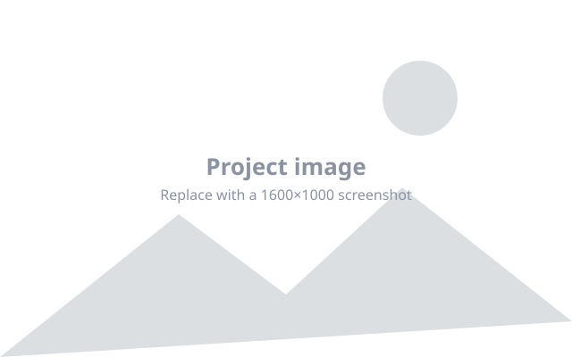

- Role
- Design & build
- Year
- 2026
- Client
- Company Name
- Stack
- HTML, CSS, JS

The problem
What was broken or missing before you started? Be concrete. If you have a number — slow load time, high bounce rate, manual process taking hours — put it here.
What I did
Walk through your approach in a few short paragraphs. This is the part people actually want to read: how you think.
- A decision you made, and why.
- A constraint you worked within.
- Something you tried that didn't work.
A detail worth highlighting
Pick one piece of the project you're proud of and go one level deeper on it. Depth on one thing beats a shallow tour of everything.
The result
What changed? Load time, conversions, hours saved, feedback received. If you don't have metrics, describe the qualitative outcome honestly.
What I'd do differently
A short, honest reflection. This reads as confidence, not weakness — people hiring you look for it.